2 FRACTIONS
Multifold multiplication
A packet of sugar weighs two kilograms. How many kilograms is four such packets ?
Let's do some mental math. Four times two kilograms is eight kilograms.
In detail,
4×2=2+2+2+2=8
What if they are half kilogram packets ?
One kilogram in two packets; so two kilograms in
four packets.
That is, four times half a kilogram is two kilograms.
In terms of numbers alone, four times half is two.
Just as we wrote four times two as 4 × 2, we can write four times half as 4 # 12 .
That is,
1
1
1
1
1
1
4 # 2 = 4 times 2 = 2 + 2 + 2 + 2 = 2
A bottle holds a quarter litre of water. How much water is needed to fill three such
bottles ?
Three times a quarter litre is three quarters of a litre.
In terms of numbers alone,
3 times 14 is 43
As a product,
3 × 14 = 3 times 14 = 43
Another problem : Five strings, each a quarter metre long are placed end to end.
What is the total length ?
Four quarters make one; and another quarter makes
it one and a quarter. Total length is one and a quarter
metres. That is,
5 times 14 is 1 14
As a product ?
5 × 14 = 1 14
Do the following problems mentally. Write each as how many times and also
as a product.
(1) Each piece of a pumpkin weighs a quarter kilogram. What is the weight of two
pieces together ? What is the weight of four such pieces ? Six pieces ?
(2) We can fill a cup with one third of a litre of milk. How much milk is needed to
fill two cups ? Four cups ?
(3) What is the total length of four pieces of ribbons, each of length three fourths of
a metre? What about five pieces ?
(4) It takes 14 hour to walk around a play ground once.
(i) How much time does it take to walk 4 times around at this speed ?
(ii) What about 7 times ?
Let's look at the calculations in such problems:
What is 2 times 13 ?
2 × 13 = 13 + 13 = 32
What about 3 times ?
3 × 13 = 13 + 13 + 13 = 1
To get 4 times of 13 , we need just add a 13 to it, isn't it ?
4 × 13 = b3 # 13 l + 13 = 1 13
It can be done this way also:
4 × 13 = 13 + 13 + 13 + 13 = 1 + 1 +3 1 + 1 = 34 = 1 13
How do we calculate 4 times 23 ?
4 × 32 = 32 + 32 + 32 + 32 = 2 + 2 +3 2 + 2 = 4 #3 2 = 38
Share and fraction
Splitting 8 as a multiple of 3 and remainder,
If 4 litres of milk is divided equally
among 3 persons, how much of milk
will each one get ?
8
6
2
6+2
2
3 = 3 = 3 + 3 = 23
What about 10 times 23 ?
We need to add ten 23 's
2
18 + 2
2
10 × 23 = 103# 2 = 20
= 18
3 = 3
3 + 3 = 63
Now try this problem :
First give 1 litre to each one. If the
remaining 1 litre is divided among
three persons, each will get 13 litre
1
more. In total 1 3 litres.
Here since 4 is divided into 3, we can
3
4 litres of milk in a bottle; how many litres
write it as a division.
4 3 = 1 13
in 7 such bottles ?
Also as a fraction.
4
1
3 = 13
We need to find 7 times 43
3
21
7 × 43 = 7 #
4 = 4
Splitting 21 as a multiple of 4 and remainder,
21
1
20 + 1
= 20
4 = 4
4 + 4
= 5 14
So, 5 14 litres in 7 bottles.
Now try these problems.
(1) The weight of an iron block is 14 kilogram
(i) What is the total weight of such 15 blocks ?
(ii) 16 blocks ?
(2) Some 2 metre long rods are cut into 5
pieces of equal length.
(i)
Why so much milk ?
What is the length of each piece ?
(ii) What is the total length of 4 pieces ?
Just see how many
problems in my
math book are about
dividing milk !
(iii) Of 10 pieces?
(3) 5 litres of milk is filled in 6 bottles of the
same size.
(i) How many litres of milk does each
bottle hold ?
(ii) How many litres in 3 bottles together ?
(iii) In 4 bottles ?
Part and multiplication
A six metre long ribbon is cut into two equal pieces.
What is the length of each piece?
Half of six metres, that is three metres.
Half means one of two equal parts, that is 12 .
So 12 of 6 metres is 3 metres.
In terms of numbers alone,
1
2 of 6 is 3
Just as in the case of multiples, parts can also be written as products. That is,
1
1
2 × 6 = 2 of 6 = 3
Suppose we divide a six metre long ribbon into three equal pieces ?
The length of each piece is a third of six metres; that is two metres
1
3 of 6 metres is 2 metres
In terms of numbers alone,
1 of 6 is 2
3
26
Standard - VII
26
Page 27
Figure fig_ch02_p027_01 (Page 27)
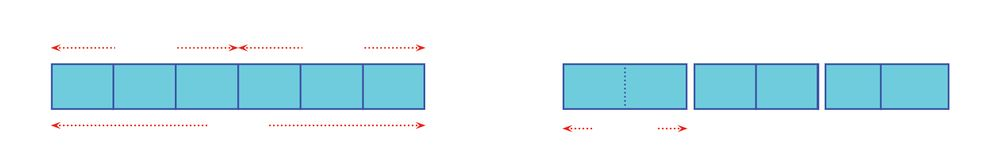
Figure fig_ch02_p027_02 (Page 27)
Fractions
Writing it as a product,
1
3 ×6=2
What if we divide a two metre long string into three equal pieces ?
We can divide each metre into three equal parts and then take two parts together.
1 metre
1
1
3 metre 3 metre
1 metre
2 metres
2
3 metre
Then,
1
2
3 of 2 metres is 3 metre
In terms of numbers alone,
Parts and times
1
2
3 of 2 is 3
If three litres of milk is divided between
four people, how much will each get ?
Writing it as a product,
One fourth of three litres; that is three
quarters of a litre. There's another way of
thinking. When one litre of milk is divided
among four people, each gets a quarter of
a litre. Because it is three litres, this can be
done three times. So one gets three times
a quarter of a litre which is three quarters
of a litre.
1
1
2
3 of 2 = 3 × 2 = 3
Another problem :
What is a quarter of five kilogram ?
A quarter of four kilograms is one kilogram; and
then a quarter of the remaining one kilogram. That is, one fourth of three litres and three
So one and a quarter kilogram in all. In terms of times a quarter of a litre are both three
quarters of a litre.
numbers,
As products of numbers,
Do these problems in head. Then write each as a part and also as a product
of numbers.
(1) Nine litres of milk is divided equally among
three children. How many litres will each get ?
What if there are four children ?
Sharing must be fair !
Each must get his fill
(2) Six kilograms of rice was packed in five bags
of the same size. How many kilograms of rice
in each bag ? What if it is packed in four bags ?
(3) A seven metre long string is divided into six
equal pieces. What is the length of each piece ?
What if it is divided into three equal pieces ?
Let's look at the calculations to find parts of
numbers.
What is 14 of 8 ?
When 8 is divided into 4 equal parts, each part is 2.
Writing as a product,
1
8
4 ×8= 4 =2
What about 43 of 8 ?
8 divided into 4 equal parts, and 3 of these parts taken together.
In other words, 3 times what is got by dividing 8 into 4 equal parts.
That is, 3 times 2, which is 6.
Writing as a product,
3
8
4× 8 = 3 × 4 = 3 × 2 = 6
It can be done this way also.
3
8
24
4 ×8= 3× 4 = 4 =6
What is 43 of 9 ?
3
9
4 ×9=3× 4
Here, instead of writing 49 = 2 14 and proceeding, it is easier to do like this:
3
9
3#9
27
4 ×9=3× 4 = 4 = 4
To see what this actually means, we write 27 as a multiple of 4, and remainder :
3
27 24 + 3
3
= 24
4 =
4 + 4 = 64
4
Now see this problem:
We have to cut off 35 of a 7 metre long string. How long is this piece ?
We need to calculate 53 of 7. How we do this ?
3#7
3
20 + 1 20
21
1
1
5 × 7 = 5 = 5 = 5 = 5 + 5 = 45
We need to cut off 4 15 metres (It is easy to cut it if we say this as 4 metres,
20 centimetres).
Now try these problems:
(1) There are 35 children in a class. 53 of them are girls. How many girls are there in
the class ?
(2) 10 kilograms of rice is filled equally in 8 bags. If the rice in 3 such bags are taken
together, how many kilograms would that be ?
(3) The area of the rectangle in the figure is 27 square centimetres. It is divided into
9 equal parts.
What is the area of the darker part in square centimetres ?
A rectangle is divided into two equal parts. Each part is half of the large rectangle,
that is, 12 of the large rectangle.
Now, suppose we divide one of these parts into three equal parts.
Each of these three small rectangles is 13 of 12 of the large rectangle, isn't it ? That is,
1
1
3 × 2 of it.
1 #1
3 2
To look at it another way, suppose we extend the horizontal lines :
What part of the large rectangle is each of these 6 small rectangles ?
Now, what do we get ?
1
6
1
1
3 × 2
30
Standard - VII
= 16
30
Page 31
Figure fig_ch02_p031_01 (Page 31)
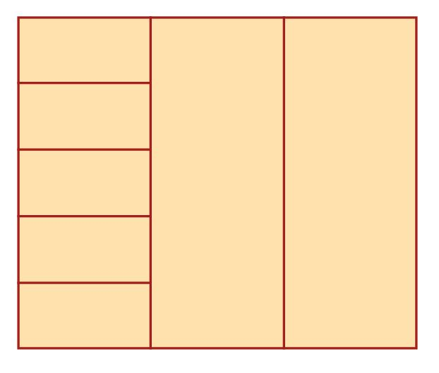
Figure fig_ch02_p031_02 (Page 31)
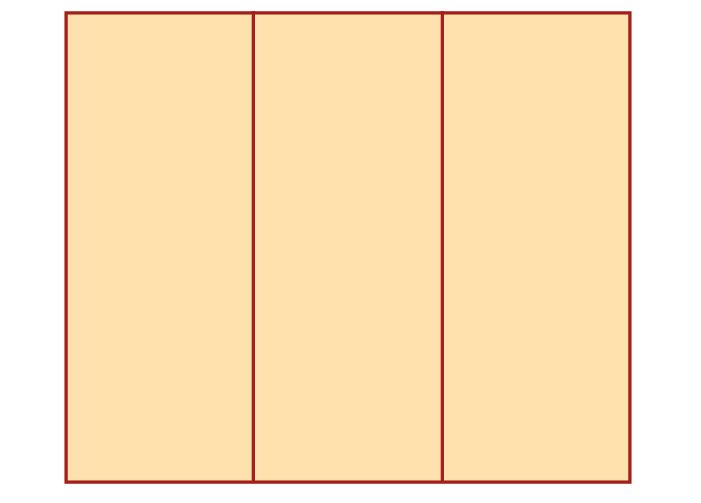
Figure fig_ch02_p031_03 (Page 31)
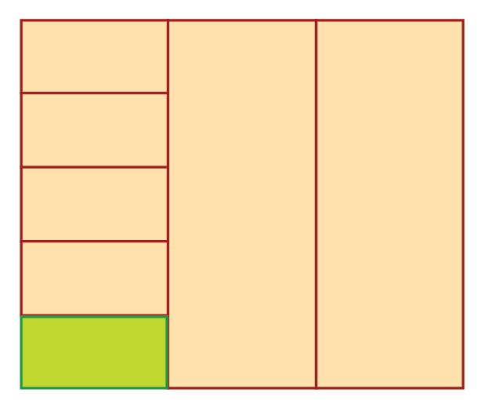
Figure fig_ch02_p031_04 (Page 31)
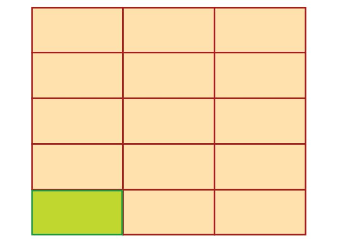
Figure fig_ch02_p031_05 (Page 31)
Fractions
Can we calculate 15 of 13 like this ? That is 15 × 13 ?
Let's draw a rectangle and divide it into three equal parts :
1
3
Now we draw horizontal lines to divide one of these rectangles into 5 equal parts.
Each of these small rectangles is 15 of 13 of the largest rectangle; that is, 15 × 13 of it.
Now try these problems:
(1) Draw rectangles and find these products.
(i) 12 × 14
(ii) 13 × 16
(iii) 15 × 18
(2) A one metre long string is divided into five equal parts. How long is half of each
part in metres ? In centimetres?
(3) One litre of milk is filled in two bottles of equal size. A quarter of the milk in
one bottle was used to make tea. How many litres of milk were used for tea ? In
millilitres ?
Another type of problem: what is 15 of 23 ?
Let's think this way :
Now try these problems :
(1) A rope 2 metres long is cut into 5 equal pieces. What is the length of three
quarters of one of the pieces in metres ? In centimetres ?
(2) 4 bottles of the same size were filled with 3 litres of water. One of these was
used to fill 5 cups of the same size. How much water is there in one such cup, in
litres ? And in millilitres ?
(3) A watermelon weighing four kilograms was cut into five equal pieces. One piece
was again halved. What is the weight of each of these two pieces in kilograms ?
And in grams ?
(4) A vessel full of milk is used to fill three bottles of the same size. Then the milk in
each bottle was used to fill four cups of the same size. What fraction of the milk
in the first vessel does each cup contain ?
(5) Draw a line AB of length 12 centimetres. Mark AC as 23 of AB. Mark AD as 14 of
AC. What part of AB is AD ?
(6) Calculate the following using multiplication :
2
3
7 of 5
(ii)
3
2
5 of 7
(iii) 23 of 43
(iv)
5
3
6 of 10
(i)
34
Standard - VII
34
Page 35
Figure fig_ch02_p035_01 (Page 35)
Fractions
More on multiplication
A bottle can contain one and a half litres of water. Four such bottles of water was
poured into a vessel. How much water is there in the vessel ?
When we pour two bottles it is three litres; four bottles makes it six litres, isn't it ?
Here we've found 4 times 1 12 . Writing this as a product,
4 × 1 12 = 6
Suppose we poured the water in 3 bottles, each containing 2 14 litres, into the vessel ?
If it is 2 litre bottles, then 6 litres. Here we have 14 litre more in each bottle. So we
must add 43 litre also. That is 6 43 litres.
Writing this as a product,
3 × 2 14 = 3 × c2 + 14 m
= (3 × 2) + c3 # 14 m
= 6 + 43
= 6 43
There is another way to calculate this. We can write 2 14 litres as 49 litres. Then,
3 × 2 14 = 3 × 49
= 3 × 14 × 9
= 43 × 9
= 27
4
= 6 43
35
Standard - VII
35
Page 36
Figure fig_ch02_p036_01 (Page 36)
Mathematics
Like this, in what all ways can you calculate 5 times 3 12 ?
We can do it this way :
5 × 3 12 = 5 × c3 + 12 m
= (5 × 3) + c5 # 12 m
= 15 + 2 12
= 17 12
And this is another way :
5 × 3 12 = 5 × 27
= 5 #2 7
= 35
2
= 17 12
Let's look at another thing : Six metres is thrice two metres. What about seven
metres ? It's thrice two metres and a metre more. In other words, thrice two metres
and half of two metres.
So we may say that seven metres is three and a half of two metres.
As a product,
3 12 × 2 = 7
In the same way, two and a quarter times five means, twice five together with a
quarter of five. That is, ten and one and a quarter; makes eleven and a quarter.
As a product,
2 14 × 5 = b2 + 14 l × 5
= (2 × 5) + b 14 # 5 l
= 10 + 1 14
= 11 14
Another way to do this is :
2 14 × 5 = 49 × 5
5
= 9#
4
= 45
4
=
11 14
How do we calculate 3 12 times 2 14 ? Writing 2 14 as 49
and 3 12 as 27 ,
63
56 + 7
9
= 7 87
3 12 2 14 = 27 49 = 27 #
#4 = 8 =
8
You're selling okra so
cheap! why don't you sell
at 30 rupees a kilo ?
Then I can get
the price for two
and a half kilos !
Now try these problems yourself :
(1) One and a half metres of cloth is needed for a
shirt. How much cloth is required for five such
shirts ?
(2) The price of one kilogram of okra is thirty rupees.
What is the price of two and a half kilograms ?
(3) A person walks two and a half kilometres in an
hour. At the same speed, how far will he walk in one and a half hours ?
37
Standard - VII
37
Page 38
Figure fig_ch02_p038_01 (Page 38)
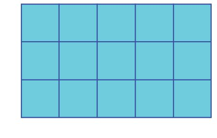
Figure fig_ch02_p038_02 (Page 38)
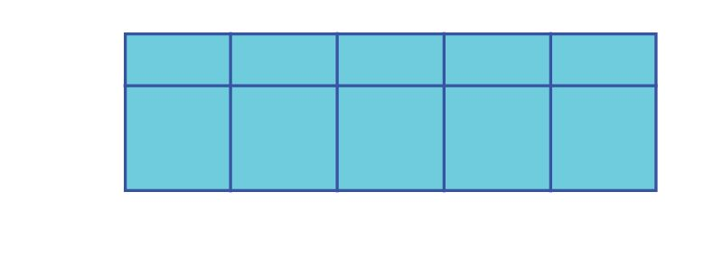
Figure fig_ch02_p038_03 (Page 38)
Mathematics
(4) Roni has 36 stamps with her. Sahira says she has 2 12 times this. How many
stamps does Sahira have ?
(5) Joji works 4 12 hours each day. How many hours does he work in 6 days ?
(6) Calculate the following :
4 times 5 13
(ii) 4 13 times 5
(iii) 1 12 times 23
(iv) 25 times 2 12
(i)
(v)
2 12 times 5 12
Fractional area
We've studied areas of rectangles in class 5.
A rectangle is 5 centimetres long and 3 centimetres high. What is its area in square
centimetres ?
3 cm
We calculated this area by filling this rectangle with squares of side one centimetre.
5 cm
5 3 = 15 such squares fill the rectangle. So, area is 15 square centimetres.
1
1 2 cm
What happens if the sides are of length 5 centimetres and 1 12 centimetres ?
5 cm
38
Standard - VII
38
Page 39
Figure fig_ch02_p039_01 (Page 39)
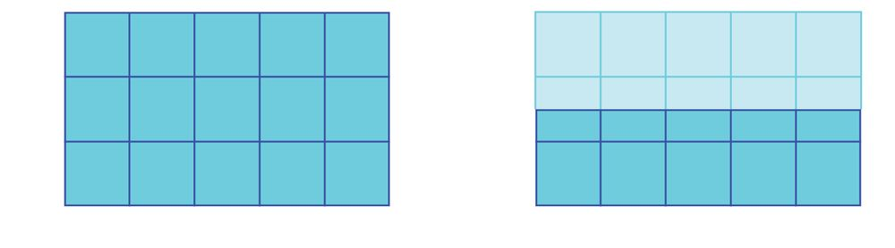
Figure fig_ch02_p039_02 (Page 39)
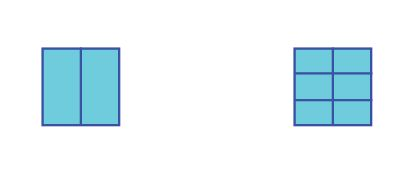
Figure fig_ch02_p039_03 (Page 39)
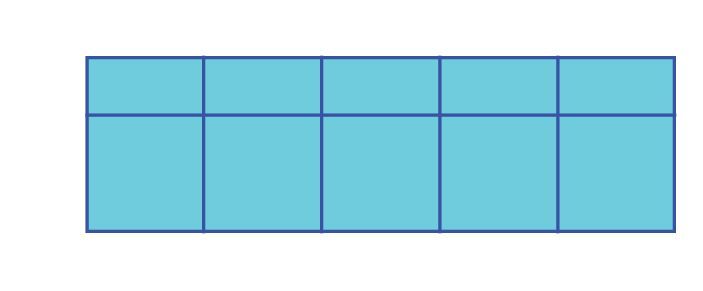
Figure fig_ch02_p039_04 (Page 39)
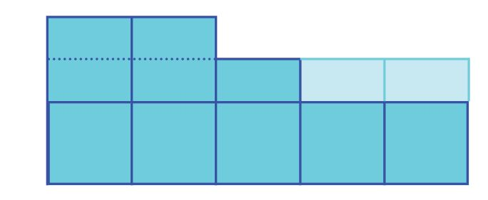
Figure fig_ch02_p039_05 (Page 39)
Fractions
1 12 cm
3 cm
Isn't this half the first rectangle ?
5 cm
5 cm
So the area is half of 15, that is 7 12 square centimetres.
This may be done in another way. What is the area of each small rectangle in the top
row of the picture on the right ?
Each one is half the area of the square with area 1 square centimetre, isn't it ?
So we can say that the area of each rectangle is 12 square centimetre.
Taking five of them together, the total area is 5 # 12 = 2 12 square centimetres. So the
area of the large rectangle is 5 + 2 12 = 7 12 square centimetres.
How do we calculate the area of a rectangle with
One and half
sides of length 12 centimetre and 13 centimetre ?
1
2
1 cm
1 cm
1 cm
1
2
1 cm
1
1 2 cm
We halved a rectangle of length
To draw such a rectangle, we first draw a square 5 centimetres and height 3 centimetres.
of side 1 centimetre. Then we draw one vertical This is the result.
line and two horizontal lines to split it into 6
equal parts.
5 cm
Suppose we rearrange the half squares in
1
3
1
2
the top row this way ?
1
2
Each small rectangle has sides 12 centimetre and
1
3 centimetre. What about its area ?
1
2
1
Area = 5 + 2 12 = 7 12 sq.cm.
39
Standard - VII
39
Page 40
Figure fig_ch02_p040_01 (Page 40)
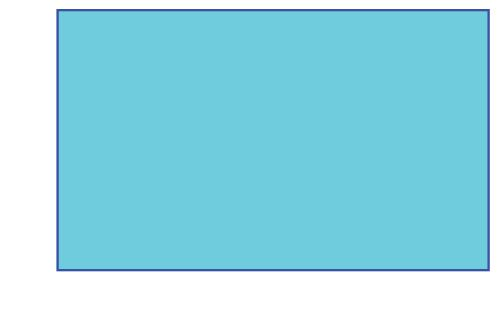
Figure fig_ch02_p040_02 (Page 40)
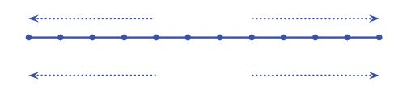
Figure fig_ch02_p040_03 (Page 40)
Mathematics
Each of them is 16 of the large square. The area of the square is 1 square centimetre.
So the area of the small rectangle is 16 square centimetre.
What about the area of a rectangle with sides of length 13 centimetre and
1
5 centimetre ?
Dividing the square of side 1 centimetre in another way, we find this area to be
1 #1
1
3 5 = 15
3 13 cm
What is the area of a rectangle of length 5 12 centimetres and breadth 3 13 centimetres ?
5 12 cm
Into how many parts of length 12 centimetre each, can we divide the bottom side?
10 lines of length 12 centimetre, each make 5 centimetres. To make 5 12 centimetres,
we need one more such line
5 12 = 11 12
11 parts
1
2
5 12 cm
Now let's divide the left side of the rectangle into parts of length 13 centimetre.
9 lines of length 13 centimetre each, make 3 centimetres. To get 3 13 centimetres, we
need one more line.
3 13 = 10 13
40
Standard - VII
40
Page 41
Figure fig_ch02_p041_01 (Page 41)
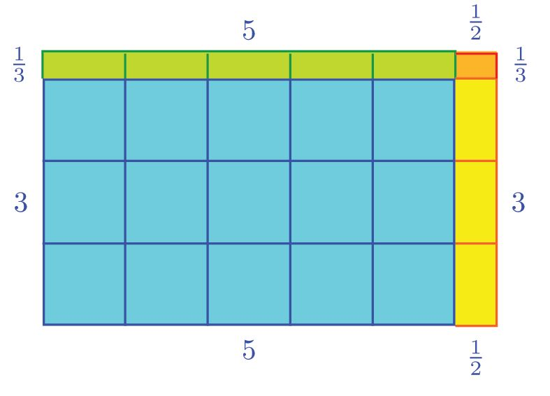
Figure fig_ch02_p041_02 (Page 41)
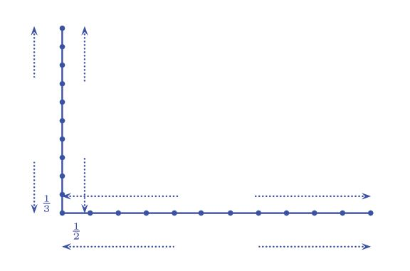
Figure fig_ch02_p041_03 (Page 41)
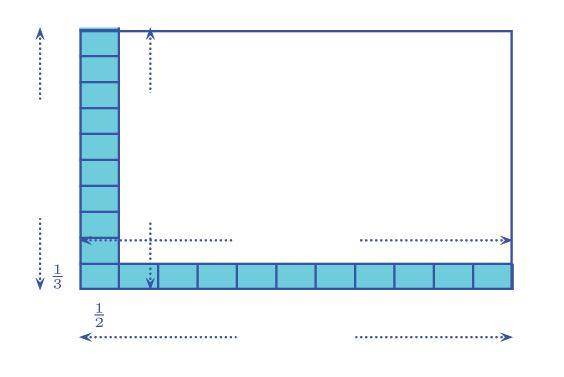
Figure fig_ch02_p041_04 (Page 41)
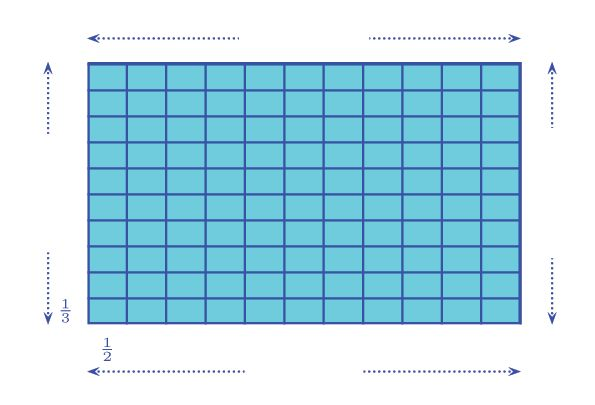
Figure fig_ch02_p041_05 (Page 41)
10 parts
3 13 cm
Fractions
11 parts
5 12 cm
We now fill part of the rectangle with small
Rectangle Division
10 rectangles
3 13 cm
rectangles of length 12 centimetre and breadth
1
We can divide a rectangle of length 5 2
1
1
3 centimetre.
cm and breadth 3 3 cm this way also :
11 rectangles
5 12 cm
How many such small rectangles are needed to The area can be calculated in four steps :
fill the rectangle completely ?
Blue rectangle
5 × 3 = 15
11 rectangles
Green rectangle
3 13 cm
10 rectangles
5 × 13 = 1 23
Yellow rectangle
1
1
2 × 3 =1 2
1
5 2 cm
Red rectangle
11 10 = 110 small rectangles in all; each of
area 16 square centimetre.
Total area
Total area.
110 × 16 = 18 13 square centimetres
Let's take another look at the operations involved :
5 12 = 11 × 12
3 13 = 10 × 13
11 × 10 × 12 × 13 = 110 × 16
The last multiplication may also be written as,
11 × 10 × 12 × 13 = c11 # 12 m × c10 # 13 m
= 5 12 3 13
Thus we see that even if the lengths are in fractions, the area of a rectangle is still the
product of the lengths of sides.
Now try these problems :
(1) The length and breadth of some rectangles are given below. Find the area of
each:
(i)
3 14 centimetres, 4 12 centimetres
(ii) 5 13 metres, 6 43 metres
(iii) 1 13 metres, 43 metres
(2) What is the area of a square of side 1 12 metres ?
(3) The perimeter of a square is 14 metres. What is its area ?